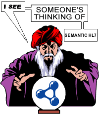
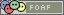
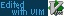

| Home | Download | Project Page | About | | |
Progetto VeggenteIl progetto Veggente nasce come tesi di laurea (tutt'ora in corso) del Politecnico di Milano nel settore dell'informatica medica. ObiettiviGli obiettivi del progetto sono due:StatusOntologieSono state convertite in ontologie le informazioni contenute nei CMET e negli HMD, oltre al RIM e ai Datatype. Rimangono ancora scoperte alcune associazioni UML, ma a breve dovrebbero essere incluse.Le ontologie derivanti dalla conversione dei dati HL7 sono qui. I file di partenza HL7 sono nel repository SubVersion. RepositoryIl repository RDF/OWL è basato su Redland ed espone le sue funzioni via SOAP. Sostanzialmente fa da collante tra gli strati di storage e parsing offerti da Redland ed il motore di inferenza.InferenzaE' stato scelto CWM come motore di inferenza a regole, modificandolo per permettergli di accedere alle triple contenute in SQLite o MySQL, usati come backend da Redland. Non è particolarmente veloce, ma si può estendere progettando nuove funzioni builtin da usare all'interno delle regole in formato N3.LicenzaIl software e i vari file distribuiti sono rilasciati sotto licenza GPL v.2Le librerie Redland sono rilasciate in un misto di licenze LGPL 2.1, GPL 2 e Apache 2. CWM è rilasciato sotto licenza W3C |
 |
| Alessio Carenini - 2006 |
  |
{kind=link}